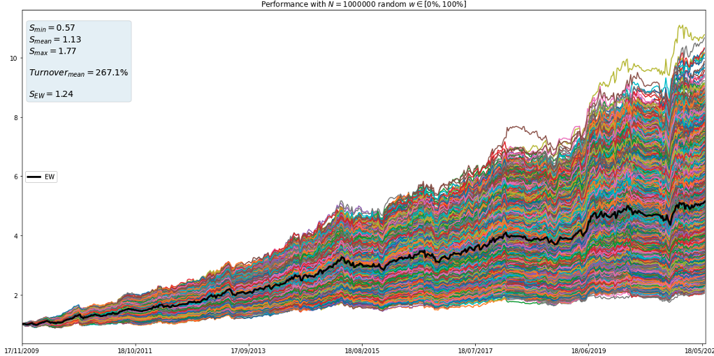
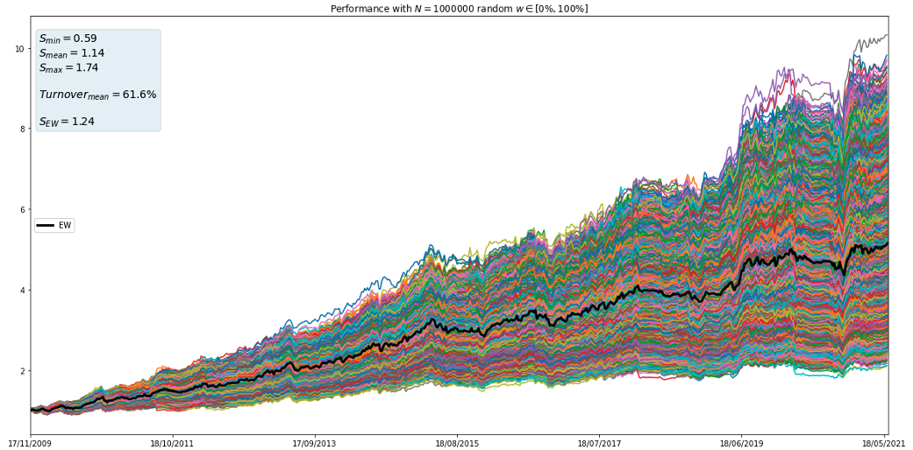

Portfolio Optimization
Internship main project
2021
Optimized for full screen: please press Plots are interactive Press space for starting

Aim
- Find optimal portfolios over in-sample (IS) time interval
- Apply weights to out-of-sample (OoS) returns
- Walk-forward optimization:
- Weekly rebalancing here
- Compare with Equally-Weighted (EW) portfolio


Table of contents
| Process Data | ||
|---|---|---|
| Data | Rebalancing | Out-sample returns |
| Methods | ||
|---|---|---|
| Markowitz | Spectral Risk Measures | Hierarchical Clustering methods |
| Additional | |
|---|---|
| Exponential Covariance | Shrinkage & Denoising |
| Guidelines/Previews | ||||
|---|---|---|---|---|
| Walk-forward optimization | Methods parameters | Constraints | Statistiques Out-Sample | Intuitions |
| Results | ||||
|---|---|---|---|---|
| Performances | Turnovers | Box-plots | $4$ Strats Study | "Boosting" |
| Ending | ||
|---|---|---|
| Go Further / Ideas | Implementation details | Bibliography |

Data
- Fund Strategies:
- Cumulated P&L time series from naïve risk parity allocation
So strats returns have the same expected volatility - Daily from 02/2007 to 06/2021
- 9 strats aggregated (ex: Bonds Trend, Carry commodities)
- Cumulated P&L time series from naïve risk parity allocation
- log-returns are used: $$\tilde{r_{t}} = \log{(1 + r_{t})} \hspace{1cm} \text{with} \hspace{1cm} r_{t} = \frac{PnL_{t} - PnL_{t-1}}{AUM_t}$$
- $X \in M_{T, N}(\mathbb{R})$ our daily log-return matrix ($T$: number of days, $N$: number of assets)
- \[\begin{equation} \log{(1 + x)} \approx x \hspace{1cm} \text{for small} \hspace{0.3cm} x \end{equation} \]
- Fund strategies are not detailed for confidentiality reasons
Rebalancing rules
- Weekly (can be changed)
- In-sample windows always end on Friday
- Gap of two days before rebalancing (practical purpose)
- Weights are shifted: in order to avoid look-ahead bias
Resample
- Resample (daily $\rightarrow$ weekly) assets returns every Tuesday
- Using: \[\begin{equation} \tilde{r}_{week} = \underset{t=Wed}{\overset{Tues}{\sum}}\tilde{r_{t}} = \underset{t=Wed}{\overset{Tues}{\sum}}\log{(1+r_{t})} \end{equation} \]
- See remarks below
- In general: \[\begin{aligned} r_{t}^{gen} = \frac{p_t - p_{t-1}}{p_{t-1}} = \frac{p_t}{p_{t-1}} - 1 \\ \text{so} \hspace{1cm} r_{week}^{gen} = \frac{p_{Tues}}{p_{Tues^{-}}} - 1 = \underset{t=Wed}{\overset{Tues}{\prod}}(1 + r_t) - 1 & = e^{\log{\left(\underset{t=Wed}{\overset{Tues}{\prod}}(1 + r_t)\right)}} - 1 \\ & = e^{\tilde{r}_{week}} - 1 \end{aligned} \]
- But here: \[\begin{equation} r_{week} = \frac{PnL_{Tues} - PnL_{Tues^{-}}}{AUM} = \underset{t=Wed}{\overset{Tues}{\sum}}r_{t} \end{equation} \]
Out-Sample Returns
- $$R_{OS} = \left[\underset{i=1}{\overset{N}{\sum}}\left(w_{t}^{[i]}r_{t+1}^{[i]}\right)\right]_{t=0,...,T-1}^{T}$$
| $W_{opt}$ | ||
|---|---|---|
| Date In-Sample |
Asset$_1$ | Asset$_2$ |
| 09/02/2007 - 11/01/2008 | $w_{0}^{[1]}$ | $w_{0}^{[2]}$ |
| 16/02/2007 - 18/01/2008 | $w_{1}^{[1]}$ | $w_{1}^{[2]}$ |
| ... | ||
| $X_{weekly}$ | ||
|---|---|---|
| Date (Tuesday) |
Asset$_1$ | Asset$_2$ |
| 22/01/2008 | $r_{1}^{[1]}$ | $r_{1}^{[2]}$ |
| ... | ||
15/01/2008: weekly return from Wednesday 09/01/2008 ($\in$ [09/02/2007,11/01/2008])
22/01/2008: weekly return from Wednesday 16/01/2008 ($\notin$ [09/02/2007,11/01/2008])
Markowitz
| Max-Sharpe | Min-Variance |
|---|---|
| $$\underset{w \in \Omega}{max} \left( \frac{\mathbb{E}[R_{P}] - r_f}{\sigma_{P}}\right)$$ | $$\underset{w \in \Omega}{min} \left(w\Sigma w^{T}\right)$$ |
With:
- $\sigma_{P} = \sqrt{w\Sigma w^{T}}$ the portfolio volatility and $\Sigma$ the covariance matrix
- $R_{P} = Xw^{T}$ the portfolio daily log-returns, with $X \in M_{T, N}(\mathbb{R})$
- $\mathbb{E}[R_{P}]$ the expected return (mean in-sample...)
- $r_f = 0$ the risk-free rate
Spectral Risk Measures
$$M_{\phi}(R_{P}) = - \int_{0}^{1}\phi(p)F_{R_{P}}^{-1}(p)\mathrm{d}p$$| Min-CVaR $\alpha\%$ | "Min-Power" $\alpha \%$ |
|---|---|
| $$\underset{w \in \Omega}{min} \left( - \frac{1}{\alpha}\int_{0}^{\alpha}F_{R_{P}}^{-1}(p)\mathrm{d}p\right)$$ | $$\underset{w \in \Omega}{min} \left( - \frac{1}{\alpha}\int_{0}^{1}(1-p)^{\frac{1}{\alpha}-1}F_{R_{P}}^{-1}(p)\mathrm{d}p\right)$$ |
With:
- $R_{P} = Xw^{T}$ the portfolio daily log-returns, with $X \in M_{T, N}(\mathbb{R})$
- $F_{R_{P}}^{-1}(p)$ the quantile function, $p \in [0, 1]$
- $\phi(p)$ the risk-aversion function
SRM weighting comparison
Hierarchical Clustering Methods
1 - Create distance matrix from similarity matrix, $\forall (i,j) \in [1,N]^{2}$:
- 2 - Select a linkage method (all but median and weighted here)
- 3 - Matrix quasi-diagonalisation (see next slide)
- 4 - Recursion (iterative allocation)
| Correlation(Pearson) | "CVaR" matrix |
|---|---|
| $\rho_{i,j} \in [-1,1]$ | $c_{i,j}=\frac{CVaR(R_i + R_j)}{CVaR(R_i) + CVaR(R_j)} \in [0,1]$ |
| $d_{i,j} = \sqrt{\frac{1}{2}(1 - \rho_{i,j})}$ | $d_{i,j} = \sqrt{(1 - c_{i,j})}$ |
| Methods | ||
|---|---|---|
| HRP | HARP | HCP |
Ex: clustering with correlation matrix
Ex: clustering with "CVaR" matrix
Recursions
-
Bisection (De Prado's method): split subset into two parts recursively
- Avoids portfolio concentration
- But can affect asset to wrong cluster
- Less dramatic when there are more assets in the portfolio
- "Topdown": Respect of the dendrogram hierarchy
- Ex for the first iteration:
Hierarchical Risk Parity (HRP)
(De Prado's method) [paper]
- Pseudo-code:
- Initialise the weight vector $w = \mathbb{1} = [1,...,1]$
- For each recursion iteration:
- For $V_1$, $V_2$ cluster $1$ and cluster $2$ variance (inverse variance portfolio)
- $\alpha_1 = 1 - \frac{V_1}{V_1 + V_2}$ and $\alpha_2 = 1 - \alpha_1$
- $w_{cluster_1}: = w_{cluster_1} \times \alpha_1$
- $w_{cluster_2}: = w_{cluster_2} \times \alpha_2$
Hierarchical Alpha Risk Parity (HARP)
- Pseudo-code:
- Initialise the weight vector $w = \mathbb{1} = [1,...,1]$
- For each recursion iteration:
- For $V_1$, $V_2$ cluster $1$ and cluster $2$ variance (inverse variance portfolio)
- For $\bar{R_1}$, $\bar{R_2}$ cluster $1$ and cluster $2$ score return (mean of assets score)
- $\alpha_1 = 1 - \frac{V_1}{V_1 + V_2}$ and $\alpha_2 = 1 - \alpha_1$
- $\beta_1 = \frac{\bar{R_1}}{\bar{R_1} + \bar{R_2}}$ and $\beta_2 = 1 - \beta_1$
- $w_{cluster_1}: = w_{cluster_1} \times $($\lambda$$\alpha_1$$ + (1 - \lambda)\beta_1$) $\hspace{0.4cm}$ $\lambda$: risk-aversion parameter ($=0.5$)
- $w_{cluster_2}: = w_{cluster_2} \times $($\lambda$$\alpha_2$$ +(1 - \lambda)\beta_2$)
Inverse-Variance Portfolio
$$\underset{w \in \Omega}{min} \left(w\Sigma w^{T} \right) \hspace{0.5cm} u.c \hspace{0.5cm} w^{T}\mathbb{1} = 1$$| Optimal (Min-Variance) | If $\Sigma$ is diagonal |
|---|---|
| $w_{MV} = \frac{\Sigma^{-1}\mathbb{1}}{\mathbb{1}^{T}\Sigma\mathbb{1}}$ | $w_{MV} = w_{IV} = \frac{diag\left[\Sigma\right]^{-1}}{tr\left[ diag\left[\Sigma\right]^{-1}\right]}$ and $w_{i} = \frac{\Sigma^{-1}_{i,i}}{\underset{j=1}{\overset{N}{\sum}}\Sigma^{-1}_{j,j}}$ |
- When $N=2$ assets: $w_1 = \frac{\frac{1}{\Sigma_{1,1}}}{\frac{1}{\Sigma_{1,1}} + \frac{1}{\Sigma_{2,2}}} = 1 - \frac{\Sigma_{1,1}}{\Sigma_{1,1} + \Sigma_{2,2}}$
- HRP logic is back
-
Note: in HRP the cluster variance is $V = \tilde{w}\tilde{\Sigma}\tilde{w}^{T}$ where $\tilde{\Sigma}$ is the
subset (cluster) covariance and $\tilde{w} = \frac{diag\left[\tilde{\Sigma}\right]^{-1}}{tr\left[ diag\left[\tilde{\Sigma}\right]^{-1}\right]}$
Returns (asset mean in-sample) to score
- Logistic rescale preferred to a MinMaxScaler: $\hspace{0.5cm} l_{rank} = \frac{1}{1 + e^{-(a\times rank + b)}}$
- Penalizes the lower ranked and boosts the higher ranked
Hierarchical Clustering Portfolio (HCP)
[paper]
- "Hierarchical Equally-Weighted portfolio", straightforward
- Favours non-correlated assets
- Only topdown recursion
Exponential Covariance [link]
- More interest in recent observations
- Standard ($\forall (i,j) \in [1,N]^{2}$): $$Cov(R^{[i]}, R^{[j]}) = \frac{1}{T-1}\underset{t=1}{\overset{T}{\sum}}\left( r^{[i]}_{t} - \bar{R}^{[i]} \right)\left( r^{[j]}_{t} - \bar{R}^{[j]} \right)$$
- Exponential: $$Cov_{exp}(R^{[i]}, R^{[j]}) = \frac{\alpha}{T-1}\underset{t=1}{\overset{T}{\sum}}(1 - \alpha)^{t-1}\left( r^{[i]}_{t} - \bar{R}^{[i]} \right)\left( r^{[j]}_{t} - \bar{R}^{[j]} \right)$$
- $(r_1^{[i]}, r_1^{[j]})$ the more recent observations
- Same for in-sample $\mathbb{E}[R_P]$ (instead of standard mean)
- $\alpha \in [0, 1]$
- higher $\alpha \rightarrow$ more interest in recent obs
- lower $\alpha \rightarrow$ tend to arithmetic mean
- Consistent coeffs distribution: $\alpha = \frac{5}{T}$ ($T$: nb days in-sample)
- Ex:
Covariance Shrinkage/Denoising
Random Matrix Theory
- Let $X \in M_{T, N}(\mathbb{R})$ be the observation matrix of a process with zero mean and variance $\sigma^{2}$
- $C = \frac{1}{T}X^{T}X$ eigenvalues converge asymptotically ($T \rightarrow +\infty$ and $N \rightarrow +\infty$) to the Marcenko-Pastur distribution \[ f(\lambda) = \begin{cases} \frac{T}{N}\frac{\sqrt{(\lambda_{+} - \lambda)(\lambda - \lambda_{-})}}{2\pi\lambda\sigma^{2}} & \text{if $\lambda \in [\lambda_{-}, \lambda_{+}]$} \\ 0 & \text{if $\lambda \notin [\lambda_{-}, \lambda_{+}]$} \end{cases} \]
- With $\lambda_{-} = \sigma^{2}\left(1 - \sqrt{\frac{N}{T}}\right)^{2}$ and $\lambda_{+} = \sigma^{2}\left(1 + \sqrt{\frac{N}{T}}\right)^{2}$
Random Matrix Theory
| Eigenvalues | Associated with |
|---|---|
| $\lambda \in [0, \lambda_{+}]$ | noise |
| $\lambda \notin [0, \lambda_{+}]$ | signal |
Process
- Denoising: Let $i$ be the position of the eigenvalue such that $i > \lambda_{+}$ and $i+1 \leq \lambda_{+}$. Replace: $$\lambda_{j} = \frac{1}{N-i}\underset{k=i+1}{\overset{N}{\sum}}\lambda_{k} \hspace{0.5cm} \forall j \in [i+1,N]$$
- Denoising Target Shrinkage: Eigenvectors associated with noise are known, apply shrinkage only to these eigenvectors
- Covariance matrix is retrieved by PCA
- More: [code snippets/blog] (exactly the same snippets as in this book)
Criticism
-
These methods are normally applied to a (very) large number of assets...
(Here we have 9 strategies) - Intuition: Because correlations are more likely to be noisy if the ratio of $T$ to $N$ is small (i.e if the finite time series length is small compared to the number of assets)
- But let's see the results in our case
Walk Forward Optimisation Guidelines
- For all methods and declinaisons (see next for methods summary)
- For rolling in-sample window sizes $l \in [1M, 36M]$
- rolling out-sample window size always $1W$
- Same out-sample time series for all methods for fair comparisons:
Starting $\hspace{0.2cm} \tilde{t}_0 = t_0 + 36M + 1W$, we have: $\hspace{0.2cm} T_{OS} = T - \tilde{t}_0$
Methods Summary: parameters variants
(X: involved)
| Method | Cov: Classic + Exp. |
Shrinkages: w/o + Others |
Clusters: Correl + CVaR |
Linkage: ward + single + ... |
Recursion: Bisection + Topdown |
$\alpha$: $5\%$ + $10\%$ |
|---|---|---|---|---|---|---|
| Max-Sharpe | X | X | ||||
| Min-Variance | X | X | ||||
| Min-CVaR | X | |||||
| Min-Power | X | |||||
| HRP | X | X | X | X | X | |
| HARP | X | X | X | X | X | |
| HCP | X | X | X | X |
Constraints $\Omega$
- All constraints are the same for each method
- Full investment: \[\begin{equation} \underset{i=1}{\overset{N}{\sum}}w_i = 1 \end{equation} \]
- Long-only and min/max allocation (pratical purpose): \[\begin{equation} w_i \in [5\%, 35\%] \hspace{1cm} \forall i \in [1, N] \end{equation} \]
- Optimization: constraints as an argument of the optimiser
-
Otherwise, redistribution as ($N$ number of assets):
- $$\text{if} \hspace{0.2cm} \exists i \hspace{0.2cm} w_i > w_{max}, \forall j \ne i, \hspace{0.2cm} w_j: = w_j + \frac{w_i - w_{max}}{N-1} \hspace{0.2cm} \text{and} \hspace{0.2cm} w_i = w_{max}$$
- $$\text{if} \hspace{0.2cm} \exists i \hspace{0.2cm} w_i < w_{min}, \forall j \ne i, \hspace{0.2cm} w_j:=w_j - \frac{w_{min} - w_i}{N-1} \hspace{0.2cm} \text{and} \hspace{0.2cm} w_i=w_{min}$$
Statistics Out-Sample
| Annualized Sharpe | Concentration (Herfindahl index) |
|---|---|
| $$S_{ann} = \frac{\mathbb{E}[R_{OS}]}{\sigma_{R_{OS}}}\sqrt{52}$$ | $$N(w) = \frac{1}{\underset{i=1}{\overset{N}{\sum}}w_{i}^{2}}$$ |
| Turnover(Weekly) | Maximum-Drawdown |
|---|---|
| $$TR = \frac{1}{T_{OS}-1}\underset{t=\tilde{t}_0}{\overset{T-1}{\sum}}\underset{i=1}{\overset{N}{\sum}}\left|w_{i,t+1} - w_{i,t}\right|$$ | (Computed on the refactorized performance (see after)) |
Intuitions
-
Bisection:
- Can affects assets to wrong clusters so doesn't make sense
-
(The more assets in the portfolio, the less dramatic it is)
-
Markowitz:
- Known to be unstable out-sample (because of forecast returns deviations)
- Covariance matrix easier to estimate, so risk-based like Min-Variance is generally preferred for stability
-
Exp. Covariance:
- More reactive ? If yes with more turnovers...
Performances
- Graphics perfs: Returns out-sample refactorized with vol objective of $12\%$ $$Perf_{OS} = \underset{\tilde{t}_0}{\overset{T}{\prod}}\left( 1 + r_{t}\times\frac{12\%}{\sigma_{R_{OS}}} \right)$$
- $1\,000\,000$ out-sample perfs with random weights to bound Sharpe ratio:
- Then plots of all performances strategies (without shrinkage)
| Plot $1$ (leverage) | Plot $2$ | Plot $3$ (our constraints) | |
|---|---|---|---|
| $w \sim \mathbb{U}[0,1]$ | $w \sim \mathbb{U}[0,1]$ | $w \sim \mathbb{U}[5\%,35\%]$ | $\in M_{T_{OS}, N}(\mathbb{R})$ |
| $\underset{i=1}{\overset{N}{\sum}}w_i \ne 1$ | $\underset{i=1}{\overset{N}{\sum}}w_i = 1$ | $\underset{i=1}{\overset{N}{\sum}}w_i = 1$ |
Random Weights: Plot $1$ (leverage)
| $w \in \mathcal{M}^{T_{OS}\times N} \sim \mathbb{U}[0,1]$, | $\underset{i=1}{\overset{N}{\sum}}w_i \ne 1$, | $1\,000\,000$ strats |
|---|


Random Weights: Plot $2$
| $w \in \mathcal{M}^{T_{OS}\times N} \sim \mathbb{U}[0,1]$, | $\underset{i=1}{\overset{N}{\sum}}w_i = 1$, | $1\,000\,000$ strats |
|---|


Random Weights: Plot $3$ (our constrains)
| $w \in \mathcal{M}^{T_{OS}\times N} \sim \mathbb{U}[5\%,35\%]$, | $\underset{i=1}{\overset{N}{\sum}}w_i = 1$, | $1\,000\,000$ strats |
|---|
Perfs Out-sample
| No Shrinkage | $l \in [1M, 36M]$ | $2988$ strats |
|---|
Perfs Out-sample
| No Shrinkage | No Max-Sharpe | No Bisection | No Exp. Cov | $l \in [12M, 36M]$ | $875$ strats |
|---|
$TR = f(l)$
$TR = f(l)$
Clustering
Box-plots analysis
- The goal is to detect patterns while keeping the most informations in the plots
- Each box-plot represents the different windows lengths $l$
-
For each method involved, without shrinkage (for the moment), comparison of:
- Covariance matrix: Classic vs. Exponential
- Clustering: Correlation matrix vs. "CVaR" matrix
- Recursion (hierarchical): Bisection vs. Topdown
- Then checkpoint and conclution
- Then see if the shrinkage/denoising adds value in our case ? (we have just $9$ assets in portfolio)
Box-plots analysis
Covariance: Classic vs. Exponential
Classic Covariance looks better ? (Press down)
Box-plots analysis
Covariance: Classic vs. Exponential
Exp. Cov better for $l \in [1M, 11M]$ (Press down)
Box-plots analysis
Covariance: Classic vs. Exponential
Classic Cov better for $l \in [12M, 36M]$
Box-plots analysis
Clustering: Correlation vs. "CVaR" similarity matrix
Correlation matrix / "CVaR" matrix for clusters: hard to differenciate
Box-plots analysis
Recursion:Topdown vs. Bisection
Topdown better, see Intuitions
Checkpoint: first conclusions
- Exponential covariance only for $l \in [1M, 11M]$ (but bigger turnovers)
- Classic covariance only for $l \in [12M, 36M]$
- We discard the bisection recursion, otherwise it will reduce the boxes of clustering methods
- See next slide all strategies boxs-plots, with shrinkage/denoising and SRMs methods
Box-plots analysis
All strategies with Exp. Cov, $l \in [1M, 11M]$, Correlation similarity
Denoising decreases Sharpe (maybe not adapted with Exp. Cov)
Box-plots analysis
All strategies with Classic Cov, $l \in [12M, 36M]$, Correlation similarity
Shrinkage doesn't add value
Cases Study
-
Go in-depth with $4$ strategies:
Methods Clusters with Linkage Recursion Covariance Shrinkage HCP Correlation Ward Topdown Exponential No Methods Clusters with Linkage Recursion Covariance Shrinkage HARP Correlation Centroid Topdown Classic No Methods Covariance Shrinkage Min-Variance Exponential OAS Methods $\alpha$ Min-CVaR $5\%$ - Analyse Out-sample performance and optimal weights
-
Analyse Out-sample Statistics

Spider Charts
-
Statistics for the $4$ strategies aggreg by mean for:
- $l \in [1M, 11M]$ if Exp. Cov as parameter
- $l \in [12M, 36M]$ otherwise
- Opposite of TR and Vol before scaling (the less the better)
HCP
Statistics
HARP
Statistics
Min-Variance
Statistics
Min-CVaR $5\%$
Statistics
"Boosting"
-
Why not considering the methods as "weak learners" and combine the weights ?
[wisdom of the crowd] - More: Why not adding the weights into another model ? [Stacking]
"Boosting"
"Boosting"
More consistent
Go Further / Ideas
- Imperative to carry out this study on several investment universes before generalising
-
Boostrapping:
- For each method and each in-sample window, repeat the optimization over different parts of the window and average the resulting weights
- Walk-forward expanding optimisation with market states ? [paper]
-
Causality instead of correlation as similarity for clusters ?
[paper]
See also [causaLens] -
Deep Learning framework (my crush): Sharpe ratio, or mixed metrics as cost function isn't so cool ? [paper]
See also [deepdow] -
Reinforcement Learning ! (Inevitable nowadays)
- Can be mixed with Deep Learning for the agent's action
- Market states directly incorporated as the environment ?
Implementation details
-
All in python

-
Packages used:
- Mandatory: numpy, pandas
- ML/Optim: scikit-learn, scipy
- Plots: matplotlib, seaborn, plotly
- Others: itertools, tqdm, pickle, warnings
Bibliography
-
L. De Prado., (2016). Building Diversified Portfolios that Outperform Out-of-Sample.
Journal of Portfolio Management. -
B. Hlavaty., (2017). Post-Modern Portfolio Construction.
JP Morgan Global Quantitative Strategies. (Provided in-house) -
T. Raffinot., (2019). Hierarchical Clustering Based Asset Allocation.
Journal of Portfolio Management. -
L. De Prado., (2018). Advances in Financial Machine Learning.
John Wiley & Sons. -
L. De Prado., (2020). Machine Learning for Asset Managers.
Cambridge University Press.